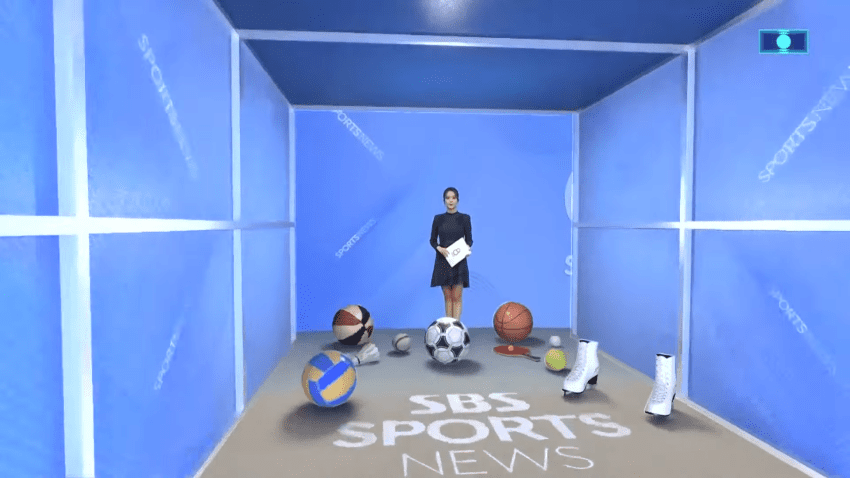
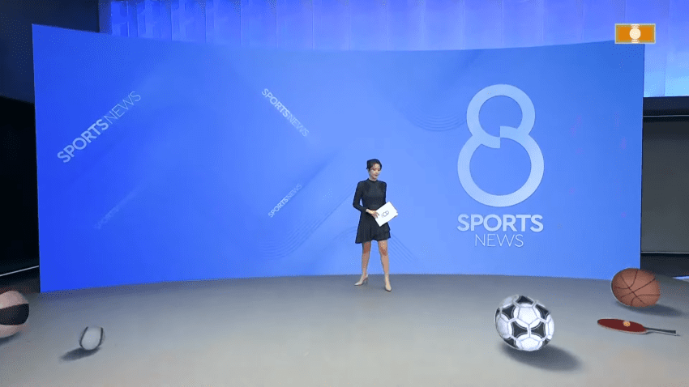
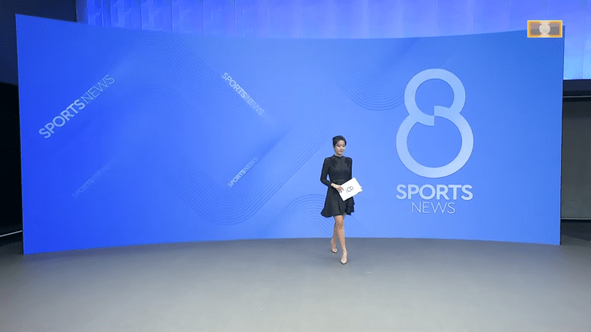
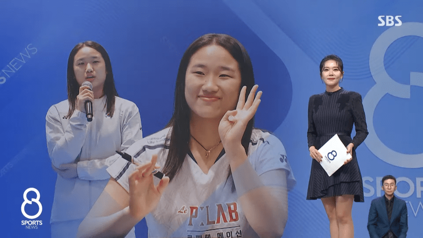
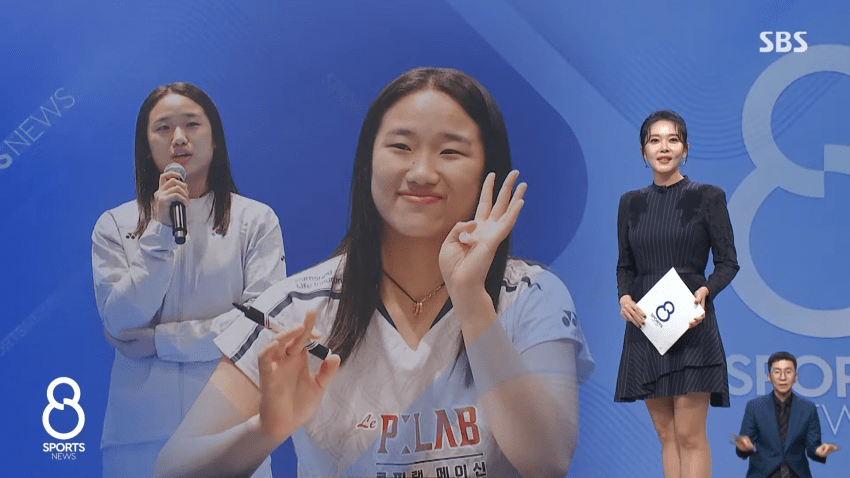
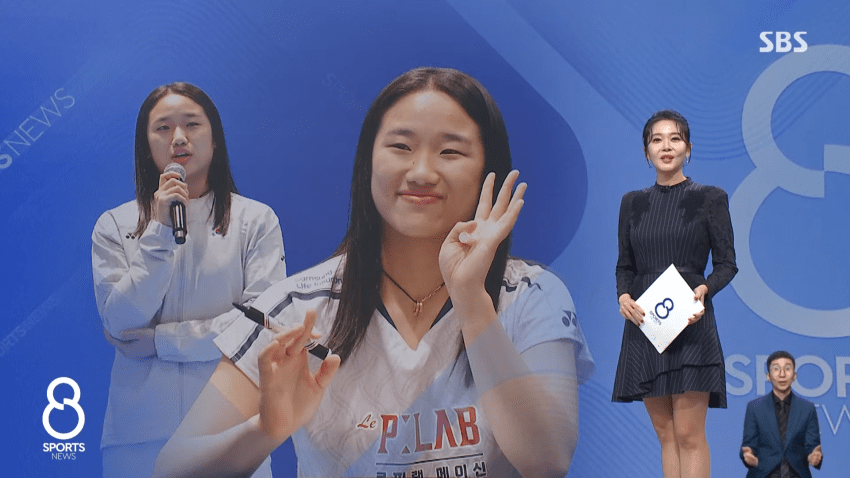
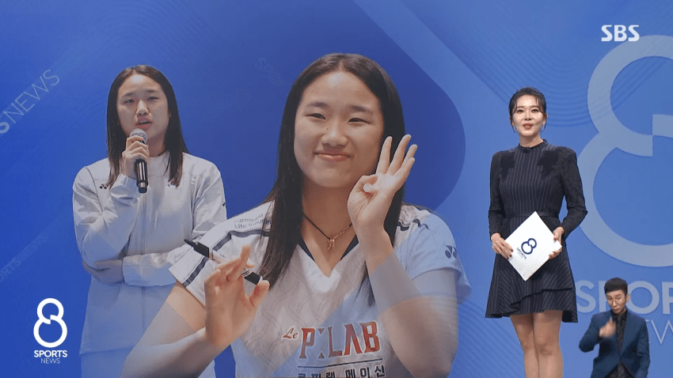
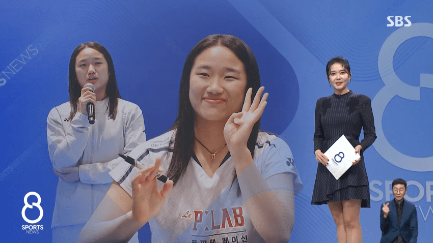
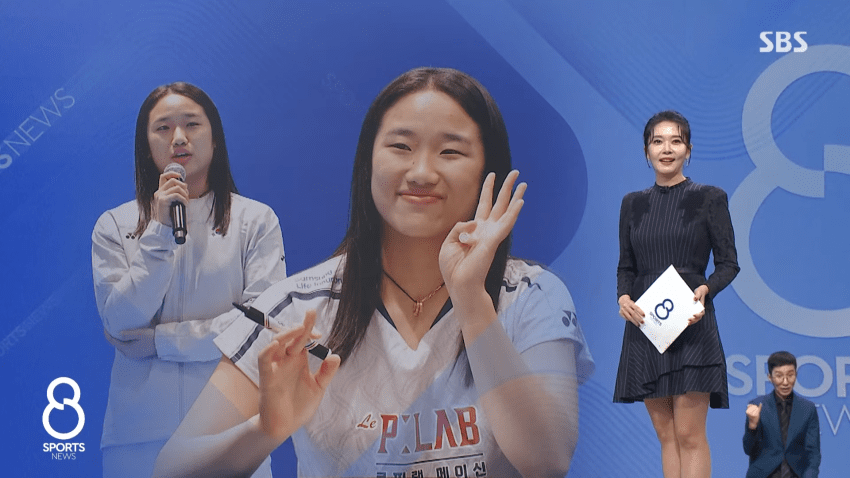
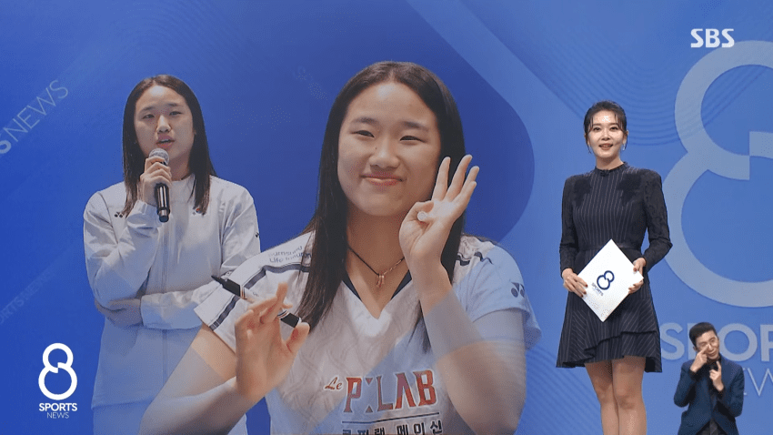
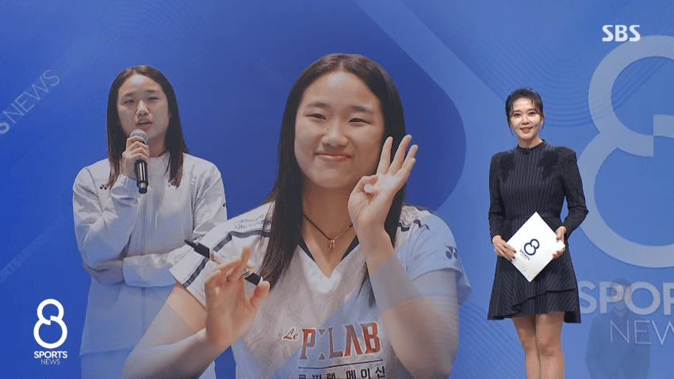
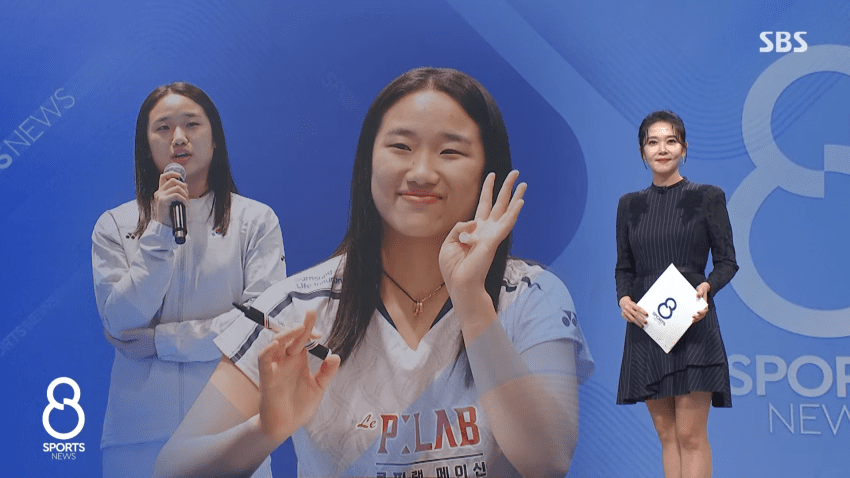












댓글
수집 당시 댓글 25개
아갤러1 · 11.16 22:22:57
· ㅇㅇ · 11.16 22:38:39
· 아갤러3 · 11.17 07:37:23
· ㅇㅇ · 11.17 10:12:18
· ㅇㅇ · 11.17 14:54:13
아갤러2 · 11.17 03:32:27
ㅇㅇ · 11.17 08:01:00
ㅇㅇ · 11.17 08:01:25
아갤러4 · 11.17 08:40:40
· ㅇㅇ · 11.17 10:21:25
봇치쟝 · 11.17 09:47:14
ㅇㅇ · 11.17 09:49:37
ㅇㅇ · 11.17 09:50:18
ㅇㅇ · 11.17 10:04:59
딸랑딸랑고추 · 11.17 10:12:56
ㅇㅇ · 11.17 10:15:24
ㅇㅇ · 11.17 10:21:54
ㅇㅇ · 11.17 10:22:24
ㅇㅇ · 11.17 10:23:05
한남 성욕
ㅇㅇ · 11.17 11:19:11
ㅅㅂ · 11.17 11:55:48
ㅇㅇ · 11.17 13:52:37
시발
산송장
새끼들
ㅇㅇ · 11.17 16:10:27
ㅇㅇ · 11.17 17:22:20
ㅇㅇ · 11.17 20:18:22